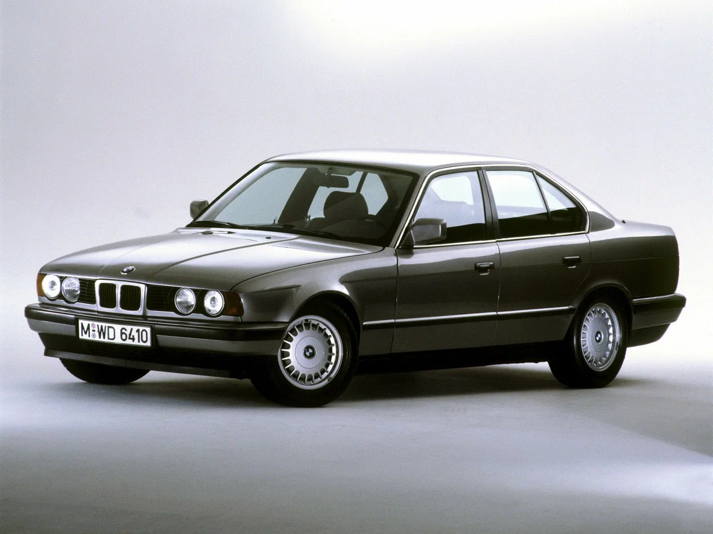

AUTOnada?

.webp)
.webp)
BMW 5 серии третьего поколения, E34, является автомобилем представительского класса, который был произведен немецким автопроизводителем BMW в 1987-1996 годах. Этот автомобиль был первым в истории BMW, который предлагался как полноприводный седан.
E34 был разработан с использованием новой платформы и имел новый дизайн, который отличался более плавными линиями и улучшенной аэродинамикой. Он также был оснащен новыми двигателями, включая бензиновые и дизельные, которые были более мощными и эффективными, чем предыдущие модели.
Салон E34 был также обновлен, получив более качественные материалы и улучшенную эргономику. Сиденья стали более комфортными, а багажник стал больше. Кроме того, была улучшена система безопасности, включая подушки безопасности и систему ABS.
Во время своего производства BMW E34 получил несколько рестайлингов, которые включали изменения в дизайне, улучшение двигателей и добавление новых опций. В целом, BMW 5 серии E34 стал одним из наиболее успешных автомобилей BMW и оставил значительный след в истории бренда.
E34 был разработан с использованием новой платформы и имел новый дизайн, который отличался более плавными линиями и улучшенной аэродинамикой. Он также был оснащен новыми двигателями, включая бензиновые и дизельные, которые были более мощными и эффективными, чем предыдущие модели.
Салон E34 был также обновлен, получив более качественные материалы и улучшенную эргономику. Сиденья стали более комфортными, а багажник стал больше. Кроме того, была улучшена система безопасности, включая подушки безопасности и систему ABS.
Во время своего производства BMW E34 получил несколько рестайлингов, которые включали изменения в дизайне, улучшение двигателей и добавление новых опций. В целом, BMW 5 серии E34 стал одним из наиболее успешных автомобилей BMW и оставил значительный след в истории бренда.